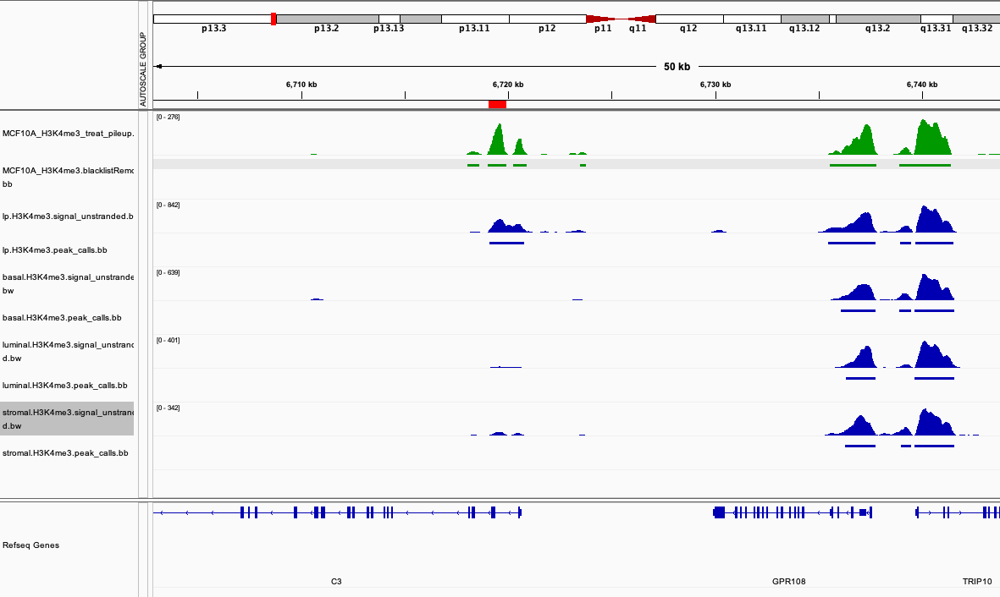
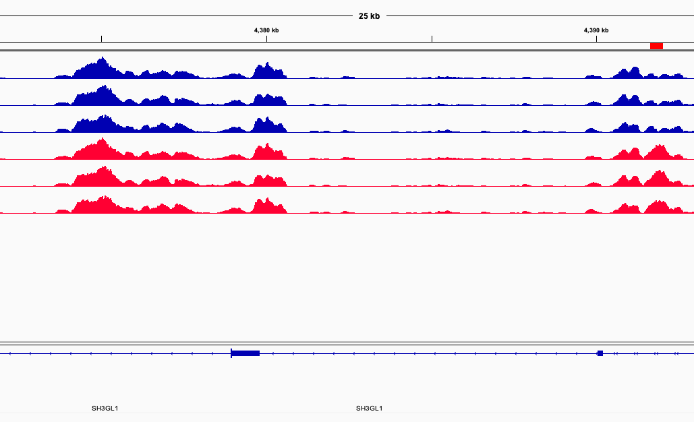

Module 3: ChIP-seq Differential Analysis
Lab
Breakdown of markdown file
- At the start of each step, the intention will declare.
- this is then follow by a code block
Code:
Like this! This is the main code to run for the step.
Additionally the code block will include a header to indicate what environment to the run code for example:
###Shell###
pwd
###R###
getwd()- explaining for commands will be broken down following code block
pwd&getwd()- see your work directory
- sprinkled throughout will also include comments
Note
Important points and considerations will also be raised as so.
Module 3 - Differential Analysis
Step1A: Copy bigWig resources
- we’ll load some bigWigs to compare with
Code
###Shell###
cp ~/CourseData/EPI_data/module123/encode_bigWig/*H3K4me3* ~/workspace/module123/bigWig/
cp ~/CourseData/EPI_data/module123/encode_bigBed/*H3K4me3* ~/workspace/module123/bigBed/
cp ~/CourseData/EPI_data/module123/triplicates/bigWig/* ~/workspace/module123/bigWig/Step1B: Using Bedtools to compare marks
- We’ll explore how to use bedtools to compare MCF10A histone marks and the interpretation of results
Code
###Shell###
MCF10A_H3K27ac=~/workspace/module123/peaks/MCF10A_H3K27ac_peaks.blacklistRemoved.narrowPeak
MCF10A_H3K27me3=~/workspace/module123/peaks/MCF10A_H3K27me3_peaks.blacklistRemoved.broadPeak
MCF10A_H3K4me3=~/workspace/module123/peaks/MCF10A_H3K4me3_peaks.blacklistRemoved.narrowPeak
bedtools intersect -u -a ${MCF10A_H3K27ac} -b ${MCF10A_H3K27me3} | wc -l
bedtools intersect -u -a ${MCF10A_H3K27ac} -b ${MCF10A_H3K4me3} | wc -lbedtools intersect -u -a ${MCF10A_H3K27ac} -b ${MCF10A_H3K27me3} | wc -l- results in an intersect of
6/988
- results in an intersect of
bedtools intersect -u -a ${MCF10A_H3K27ac} -b ${MCF10A_H3K4me3} | wc -l- results in an intersect of
789/988
- results in an intersect of
- what do we know about the relationship of H3K27ac vs H3K27me3 vs H3K4me3?
- H3K27ac and H3K27me3 tend to be antagonistic, hence the very small intersect
- H3K27ac co-occurs with H3K4me3 at promoters, hence the larger intersect
Step1C: Using Bedtools to compare samples
- We’ll demonstrate how to do comparisons on mass against ENCODE breast data and interpret results
Code
###Shell###
basal_H3K27ac=~/CourseData/EPI_data/module123/encode_bed/basal.H3K27ac.peak_calls.bed
luminal_H3K27ac=~/CourseData/EPI_data/module123/encode_bed/luminal.H3K27ac.peak_calls.bed
stromal_H3K27ac=~/CourseData/EPI_data/module123/encode_bed/stromal.H3K27ac.peak_calls.bed
lp_H3K27ac=~/CourseData/EPI_data/module123/encode_bed/lp.H3K27ac.peak_calls.bed
MCF10A_H3K27ac=~/workspace/module123/peaks/MCF10A_H3K27ac_peaks.blacklistRemoved.narrowPeak
paste \
<(ls ~/CourseData/EPI_data/module123/encode_bed/*H3K4me3* | xargs -I {} sh -c "bedtools intersect -u -a ~/workspace/module123/peaks/MCF10A_H3K4me3_peaks.blacklistRemoved.narrowPeak -b {} | wc -l") \
<(ls ~/CourseData/EPI_data/module123/encode_bed/*H3K27ac* | xargs -I {} sh -c "bedtools intersect -u -a ~/workspace/module123/peaks/MCF10A_H3K27ac_peaks.blacklistRemoved.narrowPeak -b {} | wc -l") \
<(ls ~/CourseData/EPI_data/module123/encode_bed/*H3K27me3* | xargs -I {} sh -c "bedtools intersect -u -a ~/workspace/module123/peaks/MCF10A_H3K27me3_peaks.blacklistRemoved.broadPeak -b {} | wc -l")paste \ <(ls CourseData/module123/bed/*H3K4me3* | xargs -I {} sh -c "bedtools intersect -u -a workspace/module123/peaks/MCF10A_H3K4me3_peaks.blacklistRemoved.narrowPeak -b {} | wc -l") \ <(ls CourseData/module123/bed/*H3K27ac* | xargs -I {} sh -c "bedtools intersect -u -a workspace/module123/peaks/MCF10A_H3K27ac_peaks.blacklistRemoved.narrowPeak -b {} | wc -l")pastelets us aggregate our results where each column is the output from the command within<(COMMAND)- Each
<(COMMAND), contains the followingLOOKUP | FORLOOP intersect and count \let’s continue our command on another line
- Intersect numbers:
| H3K4me3 | H3K27ac | H3K27me3 | |
|---|---|---|---|
| MCF10A | 1406 | 988 | 4797 |
| Intersecting Basal | 1039 | 656 | 2420 |
| Intersecting Luminal Progenitor | 1099 | 778 | 2496 |
| Intersecting Luminal | 1024 | 766 | 2430 |
| Intersecting Stromal | 978 | 717 | 2604 |
- MCF10A is luminal progenitor like, how is that relationship reflect in the epigenetic landscape?
- higher amount of intersect in permissive marks of H3K4me3 and H3K27ac
Step1D: Using Bedtools and pipe
- We’ll demonstrate advanced queries by piping and doing multiple bedtool queries
Code:
###Shell###
basal_H3K4me3=~/CourseData/EPI_data/module123/encode_bed/basal.H3K4me3.peak_calls.bed
luminal_H3K4me3=~/CourseData/EPI_data/module123/encode_bed/luminal.H3K4me3.peak_calls.bed
stromal_H3K4me3=~/CourseData/EPI_data/module123/encode_bed/stromal.H3K4me3.peak_calls.bed
lp_H3K4me3=~/CourseData/EPI_data/module123/encode_bed/lp.H3K4me3.peak_calls.bed
MCF10A_H3K4me3=~/workspace/module123/peaks/MCF10A_H3K4me3_peaks.blacklistRemoved.narrowPeak
bedtools intersect -u -a ${MCF10A_H3K4me3} -b ${lp_H3K4me3} | bedtools intersect -v -a stdin -b ${basal_H3K4me3} ${luminal_H3K4me3} ${stromal_H3K4me3} | wc -l
bedtools intersect -u -a ${MCF10A_H3K4me3} -b ${lp_H3K4me3} |\
bedtools intersect -u -a stdin -b ${basal_H3K4me3} |\
bedtools intersect -u -a stdin -b ${luminal_H3K4me3} |\
bedtools intersect -u -a stdin -b ${stromal_H3K4me3} | wc -lbedtools intersect -u -a ${MCF10A_H3K4me3} -b ${lp_H3K4me3} | bedtools intersect -v -a stdin -b ${basal_H3K4me3} ${luminal_H3K4me3} ${stromal_H3K4me3}| wc -l- The command can be broken down into the following :
Common with LP | Not found in Basal OR Luminal OR stromal stdintakes the results from half of our command and utilizies as input in the next- Other tools may have a similar function of
stdin. Check documentation first.
- The command can be broken down into the following :

bedtools intersect -u -a ${MCF10A_H3K4me3} -b ${lp_H3K4me3} | bedtools intersect -u -a stdin -b {basal_H3K4me3} | bedtools intersect -u -a stdin -b ${luminal_H3K4me3} | bedtools intersect -u -a stdin -b ${stromal_H3K4me3} | wc -l- The command can be broken down into the following :
MCF10A Common with LP | Common with Basal | Common with Luminal | Stromal
- The command can be broken down into the following :

Step1E: Using Bedtools to compare binary conditions/models
- We’ll explore how to use bedtools to compare binary conditions and possible interpretations
Code:
###Shell###
condA_rep1=~/CourseData/EPI_data/module123/triplicates/peaks/CondA.Rep1_peaks.narrowPeak
condB_rep1=~/CourseData/EPI_data/module123/triplicates/peaks/CondB.Rep1_peaks.narrowPeak
condA_rep2=~/CourseData/EPI_data/module123/triplicates/peaks/CondA.Rep2_peaks.narrowPeak
condB_rep2=~/CourseData/EPI_data/module123/triplicates/peaks/CondB.Rep2_peaks.narrowPeak
condA_rep3=~/CourseData/EPI_data/module123/triplicates/peaks/CondA.Rep3_peaks.narrowPeak
condB_rep3=~/CourseData/EPI_data/module123/triplicates/peaks/CondB.Rep3_peaks.narrowPeak
bedtools intersect -u -a ${condA_rep1} -b ${condA_rep2} | wc -l
bedtools intersect -u -a ${condA_rep1} -b ${condB_rep2} | wc -l
bedtools intersect -v -a ${condA_rep1} -b ${condA_rep2} | wc -l
bedtools intersect -v -a ${condA_rep1} -b ${condB_rep2} | wc -l
bedtools intersect -u -a ${condA_rep1} -b ${condA_rep2} ${condA_rep3} | wc -l
bedtools intersect -u -a ${condA_rep1} -b ${condA_rep2} ${condA_rep3} -f 0.5 -F 0.5 | wc -l
bedtools intersect -wao -a ${condA_rep1} -b ${condA_rep2} ${condA_rep3} | headbedtools intersect -u -a ${condA_rep1} -b ${condA_rep2} | wc -l- counting the number of condA_rep1 peaks that intersect condA_rep2
- returns
1191
bedtools intersect -u -a ${condA_rep1} -b ${condB_rep2} | wc -l- counting the number of condA_rep1 peaks that intersect condB_rep2
- returns
1093
bedtools intersect -v -a ${condA_rep1} -b ${condA_rep2} | wc -l- counting the number of condA_rep1 peaks that do not intersect condA_rep2
- return
50
bedtools intersect -v -a ${condA_rep1} -b ${condB_rep2} | wc -l- counting the number of condA_rep1 peaks that do not intersect condB_rep2
- returns
148
- as expected our replicates of matching conditions have more in common
bedtools intersect -u -a ${condA_rep1} -b ${condA_rep2} ${condA_rep3} | wc -l- counting the number of condA_rep1 peaks that intersect condA_rep2 or condA_rep3
bedtools intersect -wao -a ${condA_rep1} -b ${condA_rep2} ${condA_rep3} | head- specify
-waoreturns the original line of${condA_rep1}and the element it intersects - additionally adds an identify column for the database and number of base pairs overlapping
- specify
bedtools intersect -u -a ${condA_rep1} -b ${condA_rep2} ${condA_rep3} -f 0.5 -F 0.5 | wc -l- the flag
-f 0.5adds the conditions that inte##rsects are only counted when 50% overlap of A occurs - the flag
-F 0.5adds the conditions that intersects are only counted when 50% overlap of B occurs - if we remove one of the flags, how does the number change?
- what if we wanted integer threshold instead of percentage?
- the flag
bedtools intersect -wao -a ${condA_rep1} -b ${condA_rep2} ${condA_rep3} | head- specify
-waoreturns the original line of${condA_rep1}and the element it intersects - additionally adds an identify column for the database and number of base pairs overlapping
- specify
Step1F: Other useful bedtool functions
- We’ll highlight other useful bedtool applications.
Code:
###Shell###
MCF10A_H3K27ac=~/workspace/module123/peaks/MCF10A_H3K27ac_peaks.blacklistRemoved.narrowPeak
TSS=~/workspace/module123/resources/hg38v79_genes_tss_2000.bed
bedtools closest -a ${MCF10A_H3K27ac} -b ${TSS} -d | head
###
condA_peaks=~/CourseData/EPI_data/module123/triplicates/peaks/CondA.Rep1_peaks.narrowPeak
condB_peaks=~/CourseData/EPI_data/module123/triplicates/peaks/CondB.Rep1_peaks.narrowPeak
cat ${condA_peaks} ${condB_peaks} | sort -k1,1 -k2,2n | bedtools merge -i stdin > ~/workspace/module123/deeptools/merged_peaks.bed
####
methylation=~/workspace/module123/resources/example_methylation.bed
echo chr19 1 58617616 |\
sed 's/ /\t/g' |\
bedtools makewindows -w 50 -b stdin |\
awk 'BEGIN{{srand(1)}}{print $0"\t"rand()}' \
> ${methylation}
bedtools map -a ${MCF10A_H3K27ac} -b ${methylation} -c 4 -o median,count | headsed 's/ /\t/g'replace awith\tbedtools closest -a ${MCF10A_H3K27ac} -b ${TSS} -d | head- Identifies features in fileB that are closes to fileA
- useful for mapping enhancers to their closest transcription start site
-dwill make the tool report the distance- in our example, if the distance is zero the H3K27ac instead reflects an activated promoter.
cat ${condA_rep1} ${condA_rep2} ${condA_rep3} | sort -k1,1 -k2,2n | bedtools merge -i stdin | wc -l- Pseudo code :
read peak files | sort peak files | merge peak files | line count bedtools mergetakes elements specified in the input and merges the features if they intersect- behaviour can be modified to require a certain mount overlap or bookended features
- compare how many peaks
cat ${condA_rep1} ${condA_rep2} ${condA_rep3}starts off with - following merge how many peaks are left?
- Pseudo code :
echo chr19\\t1\\t58617616 | bedtools makewindows -w 50 -b stdin | awk 'BEGIN{srand(1);}{print $0"\t"rand()}' > ${metylation}- Pseudo code :
simulate a bed file of chr19 | turn bedFile into 50bp bins | add random float value echo chr19\\t1\\t58617616- ’
\\tan escape character is uses to generate a tab
- ’
bedtools makewindows -w 50 -b stdin-w 50specifies our window size- can alternatively use
-nto specified how many windows we want to divide our bedFile into
awk 'BEGIN{srand(1);}{print $0"\t"rand()}'- read our input (the 50bp window bed file of chr19) and generate a random float
srand(1)set our seed number. Changing this will affect our pseudo random numbersprint $0"\t"rand()asawkprocess line by line, print the current line (the windowed genomic coordiantes) and a random float number
bedtools map -a ${MCF10A_H3K27ac} -b ${methylation} -c 4 -o median,countbedtools mapapply a function summarizing the values of fileB that intersect fileA- in our example for we’re looking at the methylation of H3K27ac peaks
-c 4indicates which columns from fileB we’d like to use-o median,countreturn the median of col 4 and coutn the number of elements from fileB that intersected the particular element from fileA
- Pseudo code :
Step2: Differential peaks utilizing triplicates and DiffBind
- We’ll perform analysis on mock MFC10A H3K4me3 data to get significant differential peaks for each condition. To do so, we’ll utilizing the
diffBindpackage in R
Code :
###R###
library(DiffBind)
setwd("/home/ubuntu")
samples <- read.csv("CourseData/EPI_data/module123/triplicates/triplicates.csv")
MCF10A <- dba(sampleSheet=samples)
MCF10A <- dba.count(MCF10A, bUseSummarizeOverlaps=TRUE)
dba.plotPCA(MCF10A, attributes=DBA_CONDITION,label=DBA_ID)
plot(MCF10A)
MCF10A <- dba.contrast(MCF10A, categories=DBA_CONDITION)
MCF10A <- dba.analyze(MCF10A, method=DBA_EDGER)
analyzed_peaks <- dba.report(MCF10A, method=DBA_EDGER, fold=1)
dba.plotMA(MCF10A, bXY=TRUE , method=DBA_EDGER, fold=1)
write.table(analyzed_peaks, file="workspace/module123/diffBind/differential_peaks.tsv", sep="\t", quote=F, row.names=F, col.names=F)library(DiffBind)- we load R package DiffBind
setwd("/home/ubuntu")- set our working directory
read.csv("CourseData/EPI_data/module123/triplicates/triplicates.csv")- read in our csv
- let’s inspect the columns
MCF10A <- dba(sampleSheet=samples)- read our samplesheet into the
dbaobject that will be saved asMCF10A
- read our samplesheet into the
MCF10A <- dba.count(MCF10A, bUseSummarizeOverlaps=TRUE)- count the number of fragments that intersect with peaks
bUseSummarizeOverlaps=TRUEindicates the counting module to be used.SummarizeOverlapscomes from GenomicAlignments.
dba.plotPCA(MCF10A, attributes=DBA_CONDITION,label=DBA_ID)- generate a principle component analysis using data from our object
MCF10Awhere the annotations areDBA_CONDITIONand the labelling isDBA_ID
- generate a principle component analysis using data from our object
plot(MCF10A)- generate a heatmap with correlation and dendrogram
- should note the correlation is based on score of overlap and not pearson and spearman, should recalculate
MCF10A <- dba.contrast(MCF10A, categories=DBA_CONDITION)- declares what are the conditions for our differential groups
categories=DBA_CONDITIONthe category we want to compare
MCF10A <- dba.analyze(MCF10A, method=DBA_EDGER)- perform an analysis based on the
contrastwe previously established. method=DBA_EDGER, analysis engine is a library callededgeR- note for our specific example
deseq2does not work.Deseq2has a built in check for variablity which our synthetic dataset is lacking
- perform an analysis based on the
analyzed_peaks <- dba.report(MCF10A, method=DBA_EDGER, fold=1)- report the peaks identified by
DBA_EDGERto be significant and have an absolute fold change>1
- report the peaks identified by
dba.plotMA(MCF10A, bXY=TRUE , method=DBA_EDGER, fold=1)- generates Scatter plot
method=DBA_EDGERfetch results based on our previous analysis usingedgeRbXY=TRUEproduces a scatter plot,FALSEproduces a MA plotfold=1report differential positions that meet fold change threshold
write.table(analyzed_peaks, file="workspace/module123/diffBind/differential_peaks.tsv", sep="\t", quote=F, row.names=F, col.names=T)- save our differential peaks to a TSV
sep="\t"the seperator to be usedcol.names=Tinclude column namesrow.names=Finclude row namesquote=Fif we want to include quotations around values

Step3A: Differential peaks utilizing Fold change and significance - Merged peaks
- Previously we performed differential analysis on triplicates, now let’s explore how to do so on two samples.
- We’ll combine our two peak sets into an unified set.
Code:
###Shell###
condA_peaks=~/CourseData/EPI_data/module123/triplicates/peaks/CondA.Rep1_peaks.narrowPeak
condB_peaks=~/CourseData/EPI_data/module123/triplicates/peaks/CondB.Rep1_peaks.narrowPeak
cat ${condA_peaks} ${condB_peaks} | sort -k1,1 -k2,2n | bedtools merge -i stdin > ~/workspace/module123/edgeR/merged_peaks.bedcat ${condA_peaks} ${condB_peaks} | sort -k1,1 -k2,2n | bedtools merge -i stdin > merged_peaks.bed- Pseudo code break down :
Read our peaks | sort peaks coordinate wise | merge peaks
- Pseudo code break down :
Step3B: Differential peaks utilizing Fold change and significance - Merged peaks
- We’ll combine our two peak sets into an unified set.
Code:
###Shell###
condA_peaks=~/CourseData/EPI_data/module123/triplicates/peaks/CondA.Rep1_peaks.narrowPeak
condB_peaks=~/CourseData/EPI_data/module123/triplicates/peaks/CondB.Rep1_peaks.narrowPeak
mkdir ~/workspace/module123/edgeR/
cat ${condA_peaks} ${condB_peaks} | sort -k1,1 -k2,2n | bedtools merge -i stdin > ~/workspace/module123/edgeR/merged_peaks.bedcat ${condA_peaks} ${condB_peaks} | sort -k1,1 -k2,2n | bedtools merge -i stdin > merged_peaks.bed- Pseudo code break down :
Read our peaks | sort peaks coordinate wise | merge peaks
- Pseudo code break down :
Step3B: Differential peaks utilizing Fold change and significance - read counts per peak
- We’ll derrive RPKM values per BAM for each peak in our peak set
Code:
###Shell###
peaks=~/workspace/module123/edgeR/merged_peaks.bed
condA_bam=~/workspace/module123/alignments/MCF10A_H3K4me3_chr19.CondA.Rep1.bam
condB_bam=~/workspace/module123/alignments/MCF10A_H3K4me3_chr19.CondB.Rep1.bam
condA_count=~/workspace/module123/edgeR/MCF10A_H3K4me3_chr19.CondA.Rep1.bed
condB_count=~/workspace/module123/edgeR/MCF10A_H3K4me3_chr19.CondB.Rep1.bed
bedtools intersect -a ${peaks} -b ${condA_bam} -c > ${condA_count}
bedtools intersect -a ${peaks} -b ${condB_bam} -c > ${condB_count}bedtools intersect -a ${peaks} -b ${condA_bam} -c > ${condA_count}- our intersect command is the same in principle but we’re intersecting our peaks with a
BAMfile -creports counts of ourBAMthat overlap our peaks
- our intersect command is the same in principle but we’re intersecting our peaks with a
Step3C: Differential peaks utilizing Fold change and significance - EdgeR differential
- we’ll read our data into
Rand perform a statistical analysis
Code:
###R### setwd(“/home/ubuntu”) library(edgeR) library(dplyr)
condA<-read.csv(“workspace/module123/edgeR/MCF10A_H3K4me3_chr19.CondA.Rep1.bed”,sep=‘,col.names = c(“chr”, “start”, “end”,“MCF10A_H3K4me3_chr19.CondA.Rep1”),colClasses= c(“character”,“character”,“character”,“numeric”)) condB<-read.csv(“workspace/module123/edgeR/MCF10A_H3K4me3_chr19.CondB.Rep1.bed”,sep=’,col.names = c(“chr”, “start”, “end”,“MCF10A_H3K4me3_chr19.CondB.Rep1”),colClasses= c(“character”,“character”,“character”,“numeric”))
peaks<-data.frame( MCF10A_H3K4me3_chr19.CondA.Rep1=condA\(MCF10A_H3K4me3_chr19.CondA.Rep1, MCF10A_H3K4me3_chr19.CondB.Rep1=condB\)MCF10A_H3K4me3_chr19.CondB.Rep1 ) row.names(peaks)<-paste(condA\(chr,condA\)start,condA$end,sep=’_’)
edger_dl <- DGEList(counts=peaks, group=1:2,lib.size=c(1131503,1266436))
edger_tmm <- calcNormFactors(edger_dl, method = “TMM”)
bvc=0.1
edger_et <- exactTest(edger_tmm,dispersion=bvc^2)
edger_tp <- topTags(edger_et, n=nrow(edger_et$table),adjust.method=“BH”)
de <- edger_tp$table %>% filter(FDR < 0.01) %>% filter(logFC >=1 | logFC <=-1)
write.table(de, file=“workspace/module123/edgeR/differential_peaks_edger.tsv”, sep=“, quote=F, row.names=F, col.names=F)
- `condA<-read.csv("workspace/module123/edgeR/MCF10A_H3K4me3_chr19.CondA.Rep1.bed",sep='\t',col.names = c("chr", "start", "end","MCF10A_H3K4me3_chr19.CondA.Rep1"),colClasses= c("character","character","character","numeric"))`
- `read.csv` read the `CSV` file into a `data.frame`
- `sep='\t'` specify the delimiter
- `col.names = c("chr", "start", "end","MCF10A_H3K4me3_chr19.CondA.Rep1")` set our column names
- `colClasses= c("character","character","character","numeric")` indicate with column are what datatypes
- `peaks<-data.frame(MCF10A_H3K4me3_chr19.CondA.Rep1=condA$MCF10A_H3K4me3_chr19.CondA.Rep1,MCF10A_H3K4me3_chr19.CondB.Rep1=condB$MCF10A_H3K4me3_chr19.CondB.Rep1)`
- make a new data.frame using our two columns from condA and condB
- `row.names(peaks)<-paste(peaks$chr,peaks$start,peaks$end,sep='_')`
- edit row names to be match genomic coordinates
- ``row.names(peaks)<-` indicate we want to overwrite exist row names
- `paste(peaks$chr,peaks$start,peaks$end,sep='_')` we want to concatenate our `chr`,`start` and `end` with `_` as a seperator
- `edger_dl <- DGEList(counts=peaks, group=1:2,lib.size=c(1131503,1266436))`
- `DGEList(counts=peaks_clean, group=1:2)` read in our `peak_clean` data.frame
- `group=1:2` identify which groups we want to contrast
- `lib.size=c(1131503,1266436)` library size for the two conditions
- `edger_tmm <- calcNormFactors(edger_dl, method = "TMM")` calculate the normalization factor to scale library sizes
- `bvc=0.01` Set the `square-rootdispersion`. according to edgeR documentation: `from well-controlled experiments are 0.4 for human data, 0.1 for data on genetically identical model organisms or 0.01 for technical replicates`
- `edger_et <- exactTest(edger_dl,dispersion=bcv^2)`
- calculate `FC` and `Pvalue` per row
- `edger_tp <- topTags(edger_et, n=nrow(edger_et$table),adjust.method="BH")`
- calcualte `FDR` via Benjamini-Hochberg
- `de <- edger_tp$table %>% filter(FDR < 0.01) %>% filter(logFC >=1 | logFC <=-1)`
- `filter(FDR < 0.01)` filter for significant peaks
- `filter(logFC >=1 | logFC <=-1)` filter for peaks with appropriate fold change
- `write.table(de, file="workspace/module123/edgeR/differential_peaks_edger.tsv", sep="\t", quote=F, row.names=F, col.names=F)`
- save files
<img src="https://github.com/bioinformaticsdotca/EPI_2023/blob/module123/module123_images/edger.png?raw=true" alt="Region" width="750" />Server resources
QC Resources
###TSS+/-2kb
mkdir workspace/module123/qc
wget https://www.bcgsc.ca/downloads/esu/touchdown/hg38v79_genes_tss_2000.bed -O workspace/module123/resources/hg38v79_genes_tss_2000.bed
sort -k1,1 -k2,2n workspace/module123/resources/hg38v79_genes_tss_2000.bed > tmp
mv tmp workspace/module123/resources/hg38v79_genes_tss_2000.bed
###Enhancer liftover
wget https://www.bcgsc.ca/downloads/esu/touchdown/encode_enhancers_liftover.bed -O workspace/module123/resources/encode_enhancers_liftover.bed
###Blacklist
wget https://www.encodeproject.org/files/ENCFF356LFX/@@download/ENCFF356LFX.bed.gz -O ~/workspace/module123/resources/hg38_blacklist.bed.gz
gunzip ~/workspace/module123/resources/hg38_blacklist.bed.gzhg38v79_genes_tss_2000.bed- Generated by downloading Ensemblv79 GTF convert to Bed +/-2kb of TSS. See https://www.biostars.org/p/56280/
encode_enhancers_liftover.bed- download various ChroHMM state7 and merge
Encode Bed
ls ~/CourseData/EPI_data/module123/encode_bed
basal.H3K27ac.peak_calls.bed
basal.H3K27me3.peak_calls.bed
basal.H3K4me1.peak_calls.bed
basal.H3K4me3.peak_calls.bed
lp.H3K27ac.peak_calls.bed
lp.H3K27me3.peak_calls.bed
lp.H3K4me1.peak_calls.bed
lp.H3K4me3.peak_calls.bed
luminal.H3K27ac.peak_calls.bed
luminal.H3K27me3.peak_calls.bed
luminal.H3K4me1.peak_calls.bed
luminal.H3K4me3.peak_calls.bed
stromal.H3K27ac.peak_calls.bed
stromal.H3K27me3.peak_calls.bed
stromal.H3K4me1.peak_calls.bed
stromal.H3K4me3.peak_calls.bed- https://epigenomesportal.ca/tracks/CEEHRC/hg38/
- Breast Basal CEMT0035
- Breast Stromal CEMT0036
- Breast Luminal CEMT0037
- Breast Luminal Progenitor CEMT0038 #### Encode BigWig
ls ~/CourseData/EPI_data/module123/encode_bigWig
basal.H3K27ac.signal_unstranded.bigWig
basal.H3K27me3.signal_unstranded.bigWig
basal.H3K4me1.signal_unstranded.bigWig
basal.H3K4me3.signal_unstranded.bigWig
lp.H3K27ac.signal_unstranded.bigWig
lp.H3K27me3.signal_unstranded.bigWig
lp.H3K4me1.signal_unstranded.bigWig
lp.H3K4me3.signal_unstranded.bigWig
luminal.H3K27ac.signal_unstranded.bigWig
luminal.H3K27me3.signal_unstranded.bigWig
luminal.H3K4me1.signal_unstranded.bigWig
luminal.H3K4me3.signal_unstranded.bigWig
stromal.H3K27ac.signal_unstranded.bigWig
stromal.H3K27me3.signal_unstranded.bigWig
stromal.H3K4me1.signal_unstranded.bigWig
stromal.H3K4me3.signal_unstranded.bigWig- https://epigenomesportal.ca/tracks/CEEHRC/hg38/
- Breast Basal CEMT0035
- Breast Stromal CEMT0036
- Breast Luminal CEMT0037
- Breast Luminal Progenitor CEMT0038 #### MCF10A Fastq
ls ~/CourseData/EPI_data/module123/fastq
MCF10A.ATAC.chr19.R1.fastq.gz
MCF10A.ATAC.chr19.R2.fastq.gz
MCF10A.H3K27ac.chr19.R1.fastq.gz
MCF10A.H3K27ac.chr19.R2.fastq.gz
MCF10A.H3K27me3.chr19.R1.fastq.gz
MCF10A.H3K27me3.chr19.R2.fastq.gz
MCF10A.H3K4me3.chr19.R1.fastq.gz
MCF10A.H3K4me3.chr19.R2.fastq.gz
MCF10A.Input.chr19.R1.fastq.gz
MCF10A.Input.chr19.R2.fastq.gz- MCF10A histone marks and input come courtesy of Dr.Hirst
- ATACseq data originates from GSM6431322 #### Triplicates
CourseData/EPI_data/module123/triplicates/triplicates.csv
CourseData/EPI_data/module123/triplicates/alignments:
MCF10A_H3K4me3_chr19.CondA.Rep1.bam MCF10A_H3K4me3_chr19.CondB.Rep2.bam MCF10A_input_chr19.CondA.Rep3.bam
MCF10A_H3K4me3_chr19.CondA.Rep1.bam.bai MCF10A_H3K4me3_chr19.CondB.Rep2.bam.bai MCF10A_input_chr19.CondA.Rep3.bam.bai
MCF10A_H3K4me3_chr19.CondA.Rep2.bam MCF10A_H3K4me3_chr19.CondB.Rep3.bam MCF10A_input_chr19.CondB.Rep1.bam
MCF10A_H3K4me3_chr19.CondA.Rep2.bam.bai MCF10A_H3K4me3_chr19.CondB.Rep3.bam.bai MCF10A_input_chr19.CondB.Rep1.bam.bai
MCF10A_H3K4me3_chr19.CondA.Rep3.bam MCF10A_input_chr19.CondA.Rep1.bam MCF10A_input_chr19.CondB.Rep2.bam
MCF10A_H3K4me3_chr19.CondA.Rep3.bam.bai MCF10A_input_chr19.CondA.Rep1.bam.bai MCF10A_input_chr19.CondB.Rep2.bam.bai
MCF10A_H3K4me3_chr19.CondB.Rep1.bam MCF10A_input_chr19.CondA.Rep2.bam MCF10A_input_chr19.CondB.Rep3.bam
MCF10A_H3K4me3_chr19.CondB.Rep1.bam.bai MCF10A_input_chr19.CondA.Rep2.bam.bai MCF10A_input_chr19.CondB.Rep3.bam.bai
CourseData/EPI_data/module123/triplicates/bigWig:
CondA.Rep1.bw CondA.Rep2.bw CondA.Rep3.bw CondB.Rep1.bw CondB.Rep2.bw CondB.Rep3.bw
CourseData/EPI_data/module123/triplicates/peaks:
CondA.Rep1_peaks.narrowPeak CondA.Rep3_peaks.narrowPeak CondB.Rep2_peaks.narrowPeak
CondA.Rep2_peaks.narrowPeak CondB.Rep1_peaks.narrowPeak CondB.Rep3_peaks.narrowPeak- triplicates were generated from MCF10A_H3K4me3 by choosing a list of exclusive peaks for condA and condB and subsampling replicates accordingly
Lab Completed!
Congratulations! You have completed Lab 3!